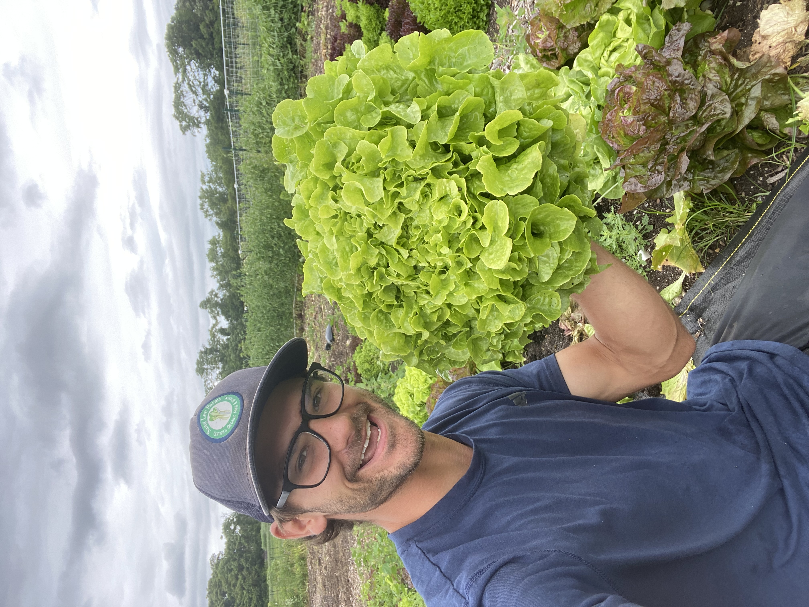
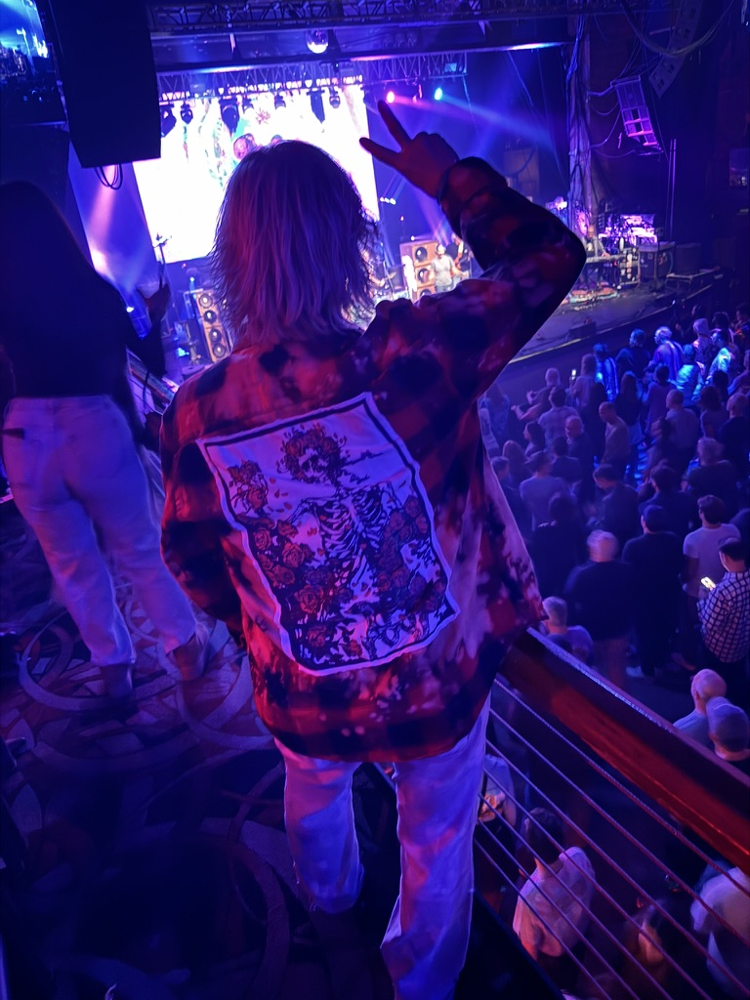
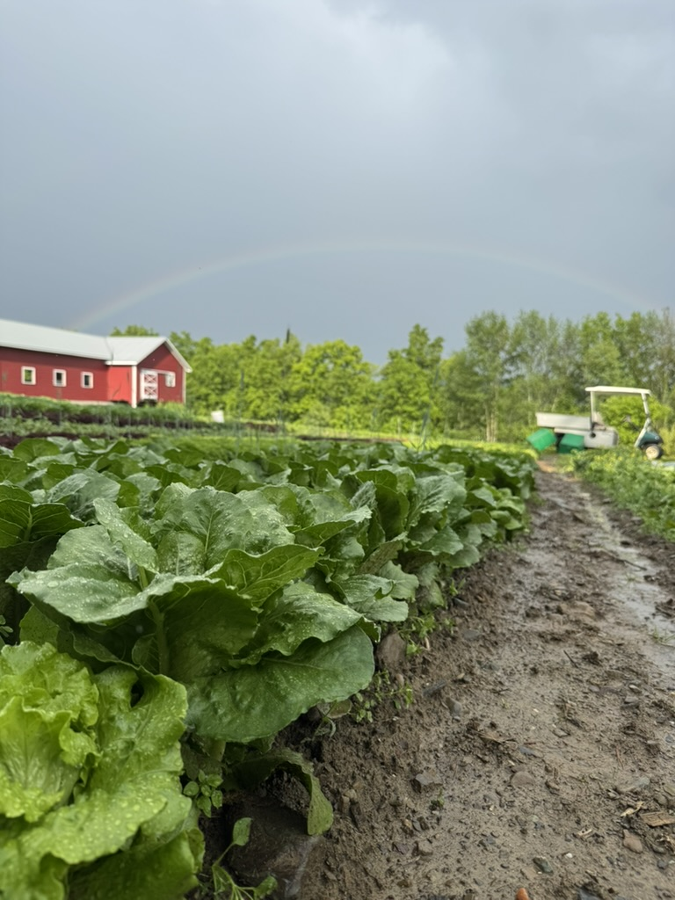

About Me

Welcome! I'm an HVAC technician apprentice, organic vegetable farmer, and self-taught developer based in Troy, New York. My work centers on building, troubleshooting, and optimizing real-world systems across physical infrastructure, sustainable agriculture, and digital tools.
HVAC & Technical Operations: As an HVAC Technician Apprentice at Crisafulli Bros, I specialize in mechanical diagnostics, system maintenance, and control logic. Holding an EPA 608 Universal Certification, I bring a detail-oriented, safety-first approach to complex heating and cooling systems, from electrical troubleshooting to refrigeration cycles.
Organic Agriculture & Systems: Agriculture has been a core pillar of my career for over a decade. As the sole operator of Happy Now Farms / Long Island Greens LLC and a farm hand at Sprouting Heart Farm, I specialize in intensive organic vegetable production, no-till practices, and four-season growing. I focus heavily on the operational systems that make local food scalable—building custom order fulfillment workflows, inventory tracking, and logistics using tools like Airtable, LocalLine, and Zapier.
Web Development & Automation: I leverage technology to solve real-world operational bottlenecks. My toolkit includes HTML, CSS, JavaScript, Netlify, REST APIs, Git/GitHub, and cloud hosting, alongside hardware projects utilizing microcontrollers and environmental sensing setups. Rather than building software for its own sake, I focus on reliable applications, custom sites, and data integrations that connect physical operations with digital infrastructure.
What Drives Me: Whether servicing mechanical equipment, managing a harvest distribution pipeline, or writing code, I value craftsmanship, self-reliance, and clean execution. When I'm not on job sites or in the field, I'm usually experimenting with personal automation setups, playing music, or building toward our long-term homesteading plans.
Skills & Expertise
Sustainable Agriculture
9+ years growing organic vegetables, managing soil health, and implementing permaculture principles for regenerative farming practices.
Building Web Skills
Learning HTML, CSS, and JavaScript through freeCodeCamp. Successfully built functional websites and eager to grow my development capabilities.
Data & Systems
Experienced with Airtable, Google Sheets, LocalLine, and Zapier for managing harvest planning, distribution analytics, and order fulfillment.
Farm Operations
End-to-end management of farm operations including online market sales, 100+ weekly custom orders, route planning, and multi-location distribution.
Featured Projects

Happy Now Farm (Owner & Operator)
My small-scale organic farm near Saratoga Springs, NY. Growing high-quality mixed vegetables and partnering with local farms to offer 600+ products through an online marketplace.
Key Results: Established successful direct-to-consumer sales through farmers markets, built local farm partnerships, managed all aspects of small farm operations from seed to sale.
Visit Farm →
Crazy Mama's Creations (Client Website)
A rock and roll t-shirt business website showcasing creative apparel designs with a bold, engaging layout.
My Role: Built the complete website from scratch using HTML, CSS, and JavaScript. Managed hosting setup and deployment through GitHub, creating a functional online presence for the business.
Visit Site →
Pleasant Valley Farm (Distribution Manager)
One of the region's most technologically sophisticated farms. I manage their advanced distribution system handling 100+ weekly custom orders.
My Role: Manage complete order fulfillment workflow using Airtable for tracking, LocalLine for sales platform, Road Warrior for route optimization, and Zapier for automation. Coordinate multi-location deliveries and ensure accurate order processing.
Shop Online →Latest Updates
Following my journey in sustainable agriculture and web development
Spring Growth
Life continues to unfold in a mysterious and beautiful way. I am starting to finally get what feels like a grip on javascript, I performed my first ever paid gig at the Bound By Fate Brewery with my band My Brothers Lunch Band, I'm continuing to learn French, my personal garden is beginning to look abundant...
Read more →Continuing My Tech Journey...
I have been trying to connect my website to my Vultr cloud server but continue to have problems. Derek Sivers inspired me to become more tech independent. I followed his steps to create a cloud server and connect it to my personal website...
Read more →Let's Connect
Interested in working together? Whether you're looking for someone with farming expertise, need help with a web project, or just want to chat about sustainable agriculture and technology — I'd love to hear from you!